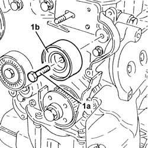
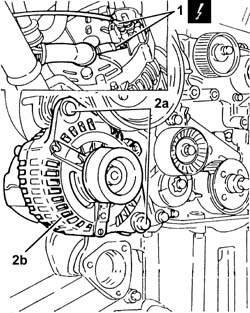
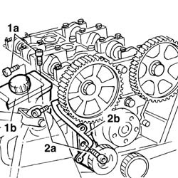
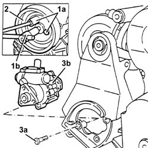
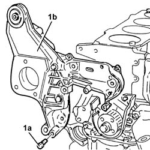

1008C18 link mount on engine - r r
- Path
- Procedures > 10 ENGINE > 1008 POWER UNIT SUPPORTS > 1008C power unit reaction elements > 1008C18 link mount on engine - r r
- Kind
- repair procedure (removal / refitting; the operation number is the code)
- Applies to
- engines: 1.6 TS , 1.8 TS; all production periods
- Interactive page
- https://sloeber94.github.io/elrnDB-a156/en/#/3237649
Applies to: engines: 1.6 TS , 1.8 TS; all production periods
 Removing
Removing
 Refitting
RefittingPosition the vehicle on the ramp.
Disconnect the battery negative (-) terminal.
 | Name | Connector |
|---|---|---|
- | Battery |
4450B10 Front WHEEL (one) - R.R.
7055B64 Engine compartment DUST shield in front wheel arch (one), left or right - R.R.
7055B54 under-engine guard - r r
1076B50 exhaust pipe attachment to engine - r + r
1016A40 ignition coil cover on cylinder head- r+r
1016A20 single cam cover - r + r and replace gasket
1092G10 single engine belt r r
1092G14 engine component single belt mobile tensioner - r + r
1092G20 engine component single belt fixed tensioner - one - r + r
1092A12 crankshaft pulley - r+r for versions with air conditioner
1032D12 timing system protective cover(s) - r + r
1032C18 mobile timing system tensioner - r + r for 24 valve engines
1. Undo the bolt (1a) and remove the timing belt fixed tensioner (1b).

Applies to: engines: 1.6 TS , 1.8 TS; all production periods
1. Disconnect the electrical connections from the alternator.
| Name | Connector |
|---|---|---|
1 | Alternator |
2. Undo the bolts (2a) and move the alternator (2b) aside.

Applies to: engines: 1.6 TS , 1.8 TS; all production periods
Applies to: engines: 1.6 TS ; all production periods
Undo the bolts and remove the timing belt right side protection.
Applies to: engines: 1.8 TS; all production periods
1. Undo the bolts (1a) and move the power assisted steering fluid reservoir (1b) aside.
2. Undo the bolts (2a) and remove the timing belt right side protection (2b).

Applies to: engines: 1.6 TS , 1.8 TS; all production periods
1. Undo the bolts (1a) for the power assisted steering pump drive pulley using a suitable spanner (1b) for counter-torque.
2. Remove the power assisted steering pump drive pulley.
3. Undo the bolts (3a) and move the power assisted steering pump (3b) aside without disconnecting the pipes.

Applies to: engines: 1.6 TS , 1.8 TS; all production periods
1. Undo the bolts (1a) and remove the support on the enigne for the reaction rod and the various engine components (1b).

Applies to: engines: 1.6 TS , 1.8 TS; all production periods
Refitting
RemovingFit the support on the engine for the reaction rod and the various engine components and fix it tightnening the bolts to the recommended torque.
 | Fastening | Component | Ø | Value (daNm) |
|---|---|---|---|---|
- | Bolt | ENGINE LINK AND VARIOUS COMPT.MOUNTS | M8 | 2.5 |
| Fastening | Component | Ø | Value (daNm) |
|---|---|---|---|---|
- | Bolt | ENGINE LINK AND VARIOUS COMPT.MOUNTS | M10 | 5 |
Place the power assisted steering pump back in its housing and fix it tightening the bolts to the recommended torque.
| Fastening | Component | Ø | Value (daNm) |
|---|---|---|---|---|
- | Bolt | POWER STEERING PUMP | M8 | 1.9 - 2.3 |
Fit the power assisted steering pump drive pulley and fix it tightening the bolts to the recommended torque using a suitable spanner for counter-torque.
| Fastening | Component | Ø | Value (daNm) |
|---|---|---|---|---|
- | Bolt | POWER STEERING PUMP DRIVE PULLEY | M8 | 1.9 - 2.3 |
Fit the right side protection for the timing belt and fix it using the bolts.
Applies to: engines: 1.8 TS; all production periods
Place the power assisted steering fluid reservoir back in its housing and fix it using the bolts.
Applies to: engines: 1.6 TS , 1.8 TS; all production periods
1008C10 power unit upper reaction link r r
Place the alternator back in its housing and fix it tightening the bolts to the recommended torque.
| Fastening | Component | Ø | Value (daNm) |
|---|---|---|---|---|
- | Bolt | ALTERNATOR ASSEMBLY | M10 | 7.0 |
| Fastening | Component | Ø | Value (daNm) |
|---|---|---|---|---|
- | Bolt | ALTERNATOR ASSEMBLY | M12 | 9.0 |
Connect the electrical connections to the alternator.
Fit the timing belt fixed tensioner and fix it using the bolt.
1032C18 mobile timing system tensioner - r + r for 24 valve engines
1032D12 timing system protective cover(s) - r + r
1092A12 crankshaft pulley - r+r for versions with air conditioner
1092G20 engine component single belt fixed tensioner - one - r + r
1092G14 engine component single belt mobile tensioner - r + r
1092G10 single engine belt r r
1016A20 single cam cover - r + r and replace gasket
1016A40 ignition coil cover on cylinder head- r+r
1076B50 exhaust pipe attachment to engine - r + r
7055B54 under-engine guard - r r
7055B64 Engine compartment DUST shield in front wheel arch (one), left or right - R.R.
4450B10 Front WHEEL (one) - R.R.
Remove the vehicle from the ramp.
Topics linked from this page (17)
- 1008C10 power unit upper reaction link r r
- 1016A20 single cam cover - r + r and replace gasket
- 1016A40 ignition coil cover on cylinder head- r+r
- 1032B14 toothed timing belt - r + r for timing adjustment or replacement versions with air conditioner
- 1032C18 mobile timing system tensioner - r + r for 24 valve engines
- 1032D12 timing system protective cover(s) - r + r
- 1076B50 exhaust pipe attachment to engine - r + r
- 1092A12 crankshaft pulley - r+r for versions with air conditioner
- 1092G10 single engine belt r r
- 1092G14 engine component single belt mobile tensioner - r + r
- 1092G20 engine component single belt fixed tensioner - one - r + r
- 4450B10 Front WHEEL (one) - R.R.
- 5510C14 ignition coil/s - r+r
- 7055B54 under-engine guard - r r
- 7055B64 Engine compartment DUST shield in front wheel arch (one), left or right - R.R.
- A1 Battery
- A10 Alternator